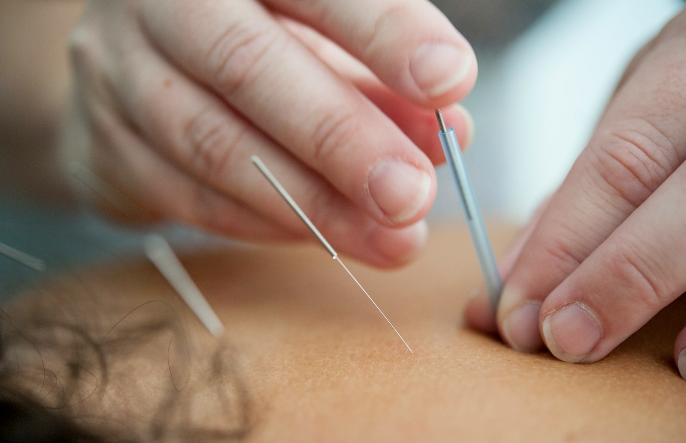

PADO KOREAN MEDICINE CLINIC
환자분들의 삶에 어떤 파도가 몰아쳐도,
함께라면 이겨낼 수 있도록
내면의 불편감, 외면의 아름다움까지 살피는 파도한의원의 세 가지 주력 진료입니다.

MAIN 01
난치성 통증
오래 이어지는 통증의 원인을 구조부터 살핍니다.
비수술 통증치료추나요법교통사고두개천골약침
자세히 보기 →
MAIN 02
갱년기 증후군
불면·열감·만성피로, 몸의 변화를 함께 살핍니다.
갱년기증후군자율신경초음파 검진
자세히 보기 →
MAIN 03
리프팅 · 다이어트
얼굴 라인과 체형의 균형을 함께 살핍니다.
리프팅·안면비대칭다이어트스킨부스터
자세히 보기 →
CATEGORY
주력 분야별 세부 진료
분야를 고르면 세부 진료 항목이 나타납니다.
그 외 진료 소아 성장
CHECK
이런 불편이 있으신가요?
- 목·어깨·허리 통증이 오래 이어지고 있어요
- 검사를 받아도 뚜렷한 원인을 모르겠어요
- 잠들기 어렵거나 자주 깨요
- 열이 오르거나 쉽게 지치는 날이 늘었어요
- 얼굴 라인이나 좌우 균형이 신경 쓰여요
- 체중과 체형 관리가 혼자서는 어려워요
해당 증상이 있다고 해서 모두 같은 원인은 아닙니다. 직접 살펴본 뒤 필요한 진료를 안내해 드립니다.
PROCESS
진료는 이렇게 진행됩니다
상담·문진
불편한 곳과 생활 습관을 충분히 들어봅니다.
진단
복진·맥진·설진과 필요 시 의료기기로 상태를 살핍니다.
진료 계획 설명
상태와 방법, 비용을 미리 설명해 드립니다.
진료
합의한 방법으로 진료를 진행합니다.
관리·경과 확인
생활 관리 방법을 안내하고 경과를 살핍니다.
DIFFERENCE
내면의 불편감,
외면의 아름다움까지
복진·맥진·설진 등 한의학적 진단과 의료기기를 함께 활용하여 몸의 상태를 살핍니다. [진단·장비 문구 입력 필요]


INSIDE
시설 둘러보기
편안한 마음으로 방문하실 수 있도록 준비한 공간입니다.


FAQ
자주 묻는 질문
처음 방문하는데 예약이 꼭 필요한가요?
예약하시면 대기 시간을 줄일 수 있고, 주차 안내도 미리 받으실 수 있어 예약을 권해 드립니다.
주차는 어떻게 하나요?
제우빌딩·대원빌딩·트리지움 상가 주차장을 이용하실 수 있고 주차료를 지원합니다. 자리가 협소하니 예약 시 꼭 문의해 주세요.
진료 비용은 어떻게 안내받나요?
진료 전에 방법과 비용을 설명해 드립니다. 비급여 항목은 비급여 안내 페이지에서도 확인하실 수 있습니다.